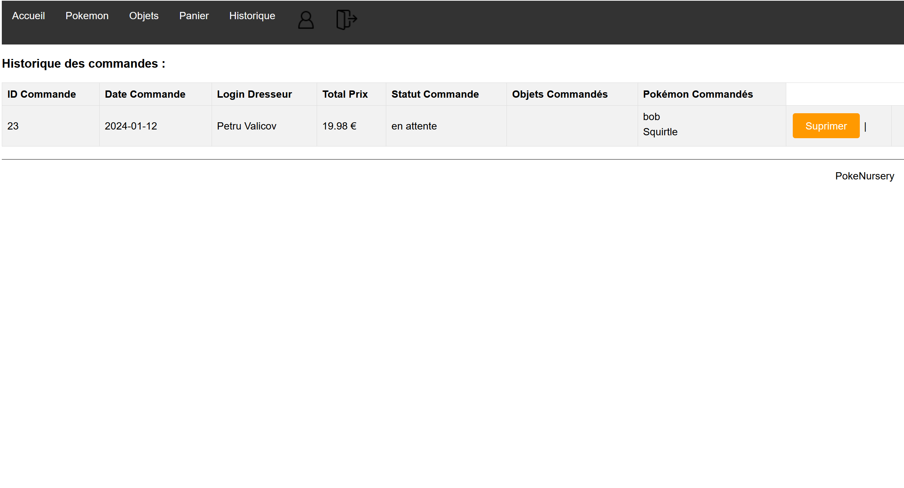
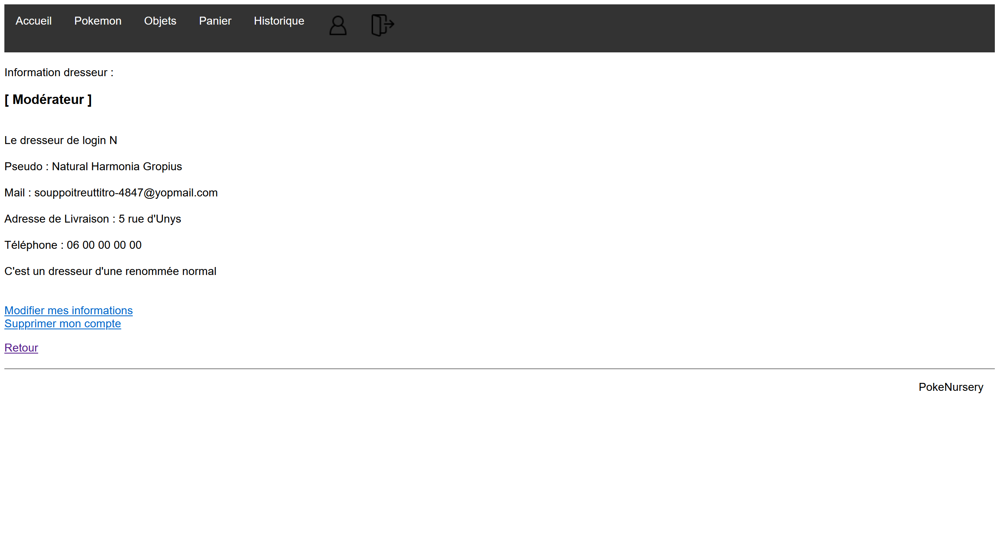

Développement d'un Casino en Ligne - Machine à Sous
Dans le cadre de ma formation en Bachelor Universitaire Technologique en Informatique, j'ai participé au développement d'un casino en ligne. Ma contribution principale concernait le développement d'une machine à sous, intégrant à la fois des défis techniques et créatifs.
Mon Rôle et Responsabilités
Au sein de mon équipe, j’ai été chargé de plusieurs aspects clés :
- Analyse de Probabilités: J'ai appliqué des concepts mathématiques complexes pour équilibrer les probabilités de gains, assurant à la fois l'attrait pour les joueurs et la rentabilité.
- Développement de la Base de Données: J'ai conçu une base de données robuste pour gérer les utilisateurs, en utilisant des procédures et des triggers pour optimiser les performances.
- Création du Front-End: Inspiré par un design 'néon et or', j'ai développé l'interface utilisateur en HTML, CSS, et PHP, en me basant sur une maquette Figma.
- Intégration de l’Audio: J'ai incorporé des effets sonores et une musique de fond, enrichissant l'expérience utilisateur.
- Gestion du Changement: Je me suis adapté aux feedbacks des clients, modifiant divers aspects du jeu pour répondre à leurs attentes.
Méthodologie
Le projet a été géré via une approche agile, en divisant le travail en sprints et en intégrant régulièrement les retours des clients, ce qui a permis une évolution constante du produit.
Difficultés
- Équilibrage des Probabilités de la Machine à Sous: Un des défis majeurs a été de trouver un équilibre entre la rentabilité pour le casino et une probabilité de gain équitable pour les joueurs. J'ai relevé ce défi en réalisant des simulations et des ajustements, aboutissant à un algorithme qui respectait cet équilibre délicat.
- Développement de la Base de Données: La création d’une base de données performante et sécurisée, intégrant des procédures et des triggers complexes, a représenté un challenge significatif. J'ai surmonté cette difficulté en approfondissant mes connaissances en SQL et en m'adaptant aux besoins spécifiques du projet.
- Fidélité au Design dans le Front-End: Reproduire fidèlement la maquette élaborée sur Figma dans le code HTML, CSS et PHP a été complexe, notamment pour l'alignement précis des éléments visuels. Cette difficulté a été surmontée en expérimentant avec différents styles CSS et en ajustant méticuleusement le positionnement des éléments.
- Intégration Audio avec JavaScript: L'apprentissage de JavaScript pour l'intégration audio et la sélection de sons appropriés qui complétaient l'ambiance du jeu ont été des défis particuliers. J'ai relevé ces défis en me formant à travers des tutoriels en ligne et en expérimentant avec différents effets sonores.
- Gestion des Changements Clients: La gestion des modifications fréquentes demandées par les clients, telles que les changements de règles, de design, et d'animations, a été un défi majeur en termes de gestion de projet. J'ai répondu à ces demandes avec flexibilité et réactivité, en restant réaliste quant aux limites de ce qui était réalisable.
- Coordination d'Équipe et Communication: Travailler en équipe et maintenir une communication fluide, en particulier à distance, a représenté un défi notable. J'ai surmonté ce défi en utilisant des outils de gestion de projet en ligne et en organisant des réunions régulières pour assurer l'alignement et le suivi du projet.
Apprentissages et Évolutions
Ce projet m'a permis de renforcer mes compétences en développement web, analyse de données, et gestion de projet. Travailler sur ce projet ambitieux a été une expérience précieuse, préparant le terrain pour ma future carrière dans le domaine informatique.
Développement d'un Site de E-commerce de Pokémon et Objets Associés




Dans le cadre de ma formation en Bachelor Universitaire Technologique en Informatique, j'ai collaboré avec une équipe de 3 personnes pour concevoir un site e-commerce ludique et fonctionnel, spécialisé dans la vente de Pokémon et d'objets relatifs à l'univers Pokémon. L'objectif était de se concentrer sur les fonctionnalités plutôt que l'esthétique, en utilisant PHP, SQL et PL/SQL avec MySQL, et en suivant le modèle MVC.
Mon Rôle et Responsabilités
- Mise en place de la Base de Données: J'ai créé et intégré la base de données du site, en concevant des procédures, des triggers, et des vues pour simplifier le développement futur.
- Conception du Backend:Je me suis concentré sur tout ce qui touchait aux utilisateurs (inscription, connexion, administration, gestion des comptes) et la sécurisation de leurs informations, ainsi que sur la gestion des commandes.
Difficultés
- Communication avec la Base de Données: Assurer une communication fluide et sécurisée entre le code et la base de données était un défi initial. J'ai utilisé des requêtes préparées PDO pour garantir la sécurité et l'efficacité.
- Sécurisation des Données: Protéger les informations sensibles des utilisateurs était crucial. J'ai implémenté un chiffrement robuste pour les mots de passe et assuré une vérification des données côté serveur.
- Restriction d'Accès: Empêcher l'accès non autorisé à certaines pages via l'URL ou les cookies demandait une attention particulière. J'ai renforcé les contrôles d'accès et utilisé des sessions pour gérer les permissions.
- Assurance du Bon Fonctionnement du Code: Le défi était de maintenir un code fonctionnel et efficace en toutes circonstances, pour lequel j'ai régulièrement testé et débogué le système.
Apprentissages et Évolutions
Ce projet a renforcé mes compétences en développement web, en particulier dans la gestion de bases de données complexes et la sécurisation des applications web. J'ai appris l'importance d'une planification rigoureuse et de la flexibilité dans la résolution de problèmes imprévus. Travailler en équipe sur ce projet m'a également permis de développer mes compétences en communication et en coordination, essentielles pour la réussite d'un projet informatique.